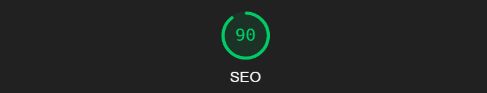
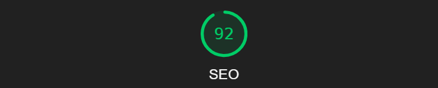
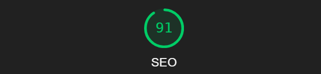
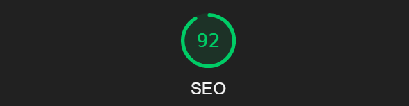

Analyse av Oblig3 oppgave
Nøkkelord undersøkelse
Jeg skal finne visse nøkkelord som er relevante til nettsiden min og jeg har i bruk google trends
-
Shoes
Jeg la Shoes inn i google trends og fant ut at dette var en av de mest brukte ordene som ble brukt.
Jeg valgte å bruke shoes fordi det er det mest brukte og lett søkte ordet for å finne sko rundt i verden.

-
Sneakers
Sneakers er et søkeord som blir brukt til mer spesefike sko. Med å bruke dette ordet får man opp folk som spesefikt leter etter etter en sko type og hvis din nettside kommer opp vil brukeren kanskje prøve ut siden.

-
SneakerHead
Jeg valgte sneakerhead fordi det er veldig relevant til nettsiden jeg lager.
HubSoleSociety handler om å lage et samfunn av "SneakerHeads" som vil snakke om sko og lage grupper der de kan dele meninger om sko, men også selge sko til hverandre.
Jeg sammenligna "SneakerHead" med "Sneaker Head" og det var flere som søkte etter "SneakerHead" enn "Sneaker Head".
-
Lighthouse analyse
SEO Index analyse
Desktop analyse
Mobile Analyse
På desktop fikk jeg en 90 på SEO analysen i motsettning til mobil versjonen som fikk 92 på SEO analysen.
Begge sidene har fått i klage at de mangler meta description. -
SEO chat analyse
Desktop analyse

Mobile analyse
På desktop fikk jeg en SEO analyse på 89 i motsettning til mobil versjonen der SEO analysen ble 91.
Både mobil og dekstop versjonen fikk i klage at de manglet meta description -
SEO produktside analyse
Desktop analyse

Mobile analyse
På desktop-versjonen mottok jeg en SEO-analyse med en poengsum på 90, mens mobilversjonen oppnådde 92 i SEO-analysen.
Begge versjonene fikk bemerkninger om manglende meta-beskrivelse.
-
Webaim analyse
Webaim Index analyse
Dekstop analyse


på index siden min fikk jeg 2 errorer, de var missing form label på søkebaren min og en empty link på symbolene mine som ikke syntess på webaim